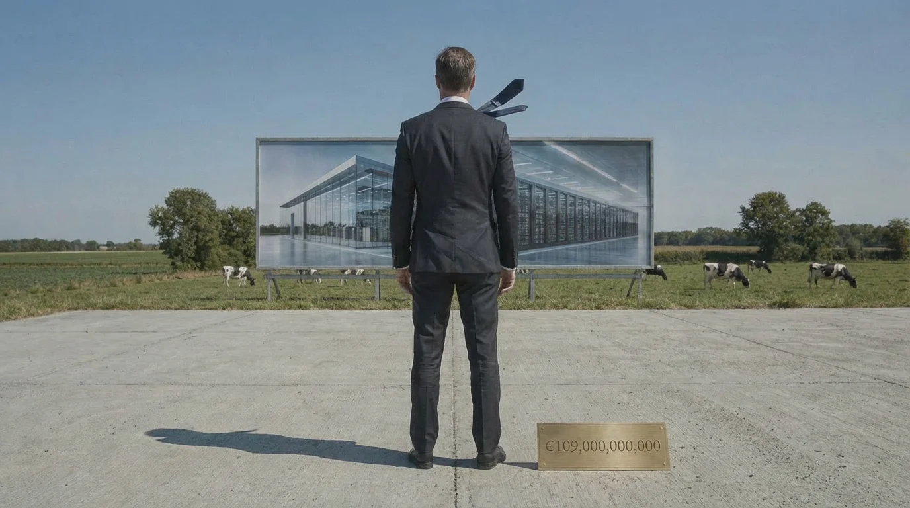
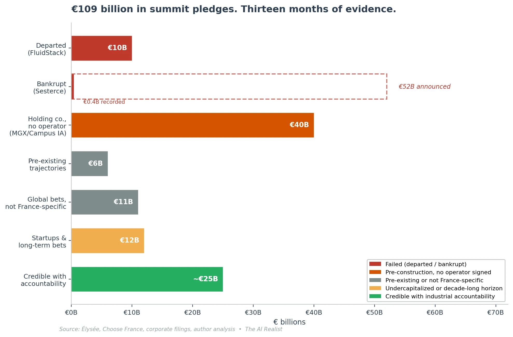
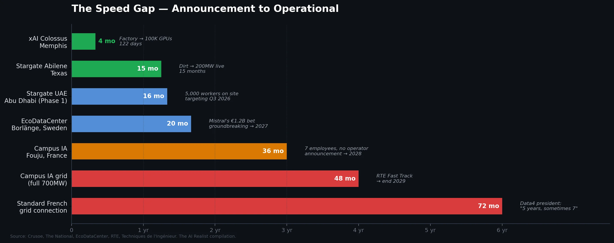

On February 11, 2025, at Station F in Paris, Emmanuel Macron announced that France had secured €109 billion in private investment for artificial intelligence. He compared the figure favorably to America’s $500 billion Stargate project. The audience applauded. The press reported the number. The Élysée published the breakdown.[1]
One year later, at the AI Impact Summit in New Delhi, Macron was still performing. The €109 billion had become “we are delivering this project — €58 billion in 2025.” The figure corresponds to a UNCTAD report that countedannouncedforeign greenfield projects, and the overwhelming majority of the total consisted of two entries: MGX and Brookfield, the same pledges from the Paris summit, reclassified as FDI announcements. The same money, counted three times: once as a summit pledge, once as a UNCTAD greenfield announcement, once as “delivery” in Delhi.[2]
In March 2026, the masks are coming off. One pledge left for America. One entered judicial restructuring. One is a holding company with seven employees working on a public inquiry that hasn’t started. And France’s sovereign AI champion — the company the state claimed as proof that the model works — trains its models on American cloud infrastructure, co-develops base models on Nvidia’s DGX Cloud, and just invested €1.2 billion in Sweden for its first data center outside France. The summit didn’t produce an AI strategy. It produced a ledger of failing aspirations that it’s time to audit, line by line.
The Pledge Credibility Test
Before the cold accounting, a framework. Every infrastructure commitment made at a government summit can be graded on a five-tier scale, from aspiration to operational reality. The tiers:MOU(a memorandum of understanding, committing nothing),LOI(a letter of intent, slightly firmer),PPA or binding contract(a legal obligation conditional on construction),construction underway(capital deployed, permits issued, ground broken), andoperational(power flowing, GPUs running, customers paying). The summit’s €109 billion was reported as though it occupied the top two tiers. Almost none of it did.[3]
The test also requires examining who made the pledge. A company with an existing balance sheet, operating assets, and debt covenants has structural accountability — miss the target and the bondholders notice. A startup with $4.5 million in disclosed equity and a €10 billion pledge has no accountability mechanism at all. The summit gave them equal billing because it needed a large, self-serving number.[4]
Here is the €109 billion, thirteen months later.

The departed: FluidStack (€10 billion)
On February 10, 2025, Macron stood beside FluidStack co-founder César Maklary as the company signed an MOU to build a one-gigawatt AI supercomputer in France. “This €10 billion agreement with FluidStack embodies my ambition,” Macron said.[5]
FluidStack had disclosed raising $4.5 million in equity. The pledge was 2,222 times its disclosed capital.[6]
On March 18, 2026, Bloomberg reported that FluidStack had completely withdrawn, pivoting to the United States after signing a $50 billion partnership with Anthropic to operate data centers in New York and Texas.[7] FluidStack also exited the Eclairion site south of Paris, where it was building an 18,000-GPU cluster for Mistral AI, a real facility with a multi-year contract, physical hardware, and a named marquee customer. Local authorities in Bosquel have reopened the application process. No replacement has been found. The company is relocating its headquarters from London to New York.[8]
What killed the Eclairion cluster is instructive. In June 2025, Mistral announced Mistral Compute, a direct partnership with Nvidia that replaced FluidStack as the commercial layer. Same département, same power scale, same GPU count. FluidStack was the intermediary between Nvidia hardware and Mistral’s training workloads. Once Mistral and Nvidia connected directly, the intermediary had no purpose.[9] The summit’s model was that foreign operators would build France’s sovereign infrastructure. The flagship French AI company replaced the flagship foreign operator with a direct chipmaker deal, and the summit’s model was disproved by the company it was supposed to serve.
The bankrupt: Sesterce (€52 billion announced, €400 million recorded)
Sesterce deserves its own section because it reveals the summit’s vetting standards — or their absence. The company, a sixty-person Marseille GPU cloud provider that pivoted from cryptocurrency mining, announced €52 billion in AI investment at the summit. The number was calculated, as L’Usine Digitale reported, by multiplying the catalogue price of high-end Nvidia GPUs by 1.2 million units and adding in infrastructure costs. The CEO acknowledged that the company “obviously does not have €52 billion in equity.” The Élysée quietly recorded only the first tranche at €400 million. The Journal des Entreprises noted the €52 billion claim exceeded total US private AI investment in 2023.[10]
On February 5, 2026 — five days before the one-year anniversary of its summit announcement — Sesterce Group entered judicial restructuring in the Marseille commercial court.[11]
The summit’s headline machinery could not distinguish between a commitment and a catalogue price multiplied by a wish. The €52 billion entered the discourse. The €400 million entered the Élysée ledger. Theredressement judiciaireentered the commercial court. Each number lives in its own universe.
The holding company: MGX (€30–50 billion)
MGX is the largest single entry in the €109 billion. It is the most instructive, because unlike FluidStack or Sesterce, the MGX commitment progressed — on paper.
I searched French corporate records. Campus AI SAS was registered on April 7, 2025, SIREN 943 352 161. All three directors are senior MGX executives — the CIO for Semiconductors & Infrastructure, a Managing Director, and the COO/CFO. No Bpifrance, Mistral, or Nvidia personnel hold governance roles. BPI claims undisclosed “blocking rights” but invoked business secrecy when asked about the terms. The company has seven employees as of February 2026.[12]
The site is Fouju, in Seine-et-Marne: roughly seventy hectares of currently cultivated farmland. A public consultation ran in October–November 2025 and drew roughly 100 attendees to the opening session. RTE signed France’s first “Fast Track” grid connection contract in January 2026 — 240MW by the end of 2027, 700MW by 2029, designed for 1,400MW. This is a genuine and unprecedented reform achievement. The Fast Track procedure, approved by the energy regulator in spring 2025, requires a developer's upfront financial commitment to prevent phantom capacity reservations. That commitment is real.[13]
Everything else remains pre-construction. Building permits have been filed but not issued. The public inquiry has not opened. No construction contract has been awarded. No GPU orders have been disclosed. And here is the fact that reframes the entire €30–50 billion line:Campus IA does not build datacenters. It is a site developer seeking operators. As of February 2026, no data center operator had signed. Mistral — a founding shareholder — has not committed as a commercial tenant. In the project coordinator’s words, Mistral is “a preferred client lead… but today, nothing has been signed with it.” No external tenant has signed either.[14]
Meanwhile, MGX’s global portfolio includes co-investment in OpenAI’s Stargate project, co-lead investment in Anthropic, and participation in BlackRock’s $30 billion AI infrastructure fund. MGX targets approximately $10 billion in annual global deployment.[15] France’s €30–50 billion competes for that budget with every other commitment on MGX’s ledger. Stargate Abilene has two operational buildings. Stargate UAE has 5,000 construction workers on site. Campus IA at Fouju has seven employees and a large patch of French farmland.
The rest of the ledger
The remaining €15–20 billion falls into three categories, none of which changes the structural picture.
First, established operators continue pre-existing trajectories. Digital Realty — France’s largest datacenter operator with 13 facilities across Paris and Marseille, several still under construction — pledged €5 billion at the AI summit; the confirmed tranche at Choose France three months later was €2.3 billion across two specific projects — the remaining €5 billion remains unallocated commitments. The datacenter PAR11 opened on schedule in Q3 2025; MRS6 began its public inquiry in October 2025, with the building permit granted in January 2026. Equinix committed €630 million at the summit for new facilities in Paris and Bordeaux. Telehouse (€400 million), a KDDI subsidiary, is expanding incrementally in Paris. This is real infrastructure, built by these operators before the summit and will continue to be built after, regardless of who dines in the Élysée.[16]
Second, global financial investors are making thematic bets that happen to include France. Apollo’s $5 billion was a “funding initiative for AI energy projects” — global, not France-specific. Since the summit, Apollo’s actual deployments have been American: $3.5 billion in financing to xAI for compute through Valor, a majority acquisition of Stream Data Centers in Dallas, and $35 billion in financing discussions with Meta. No France-specific project has been announced. Amazon pledged €6 billion at the Paris summit; at Choose France in May, the confirmed figure was €300 million — the majority of which was logistics infrastructure, including a distribution center in Eure-et-Loir. AWS simultaneously committed €33.7 billion to Spain. France’s share of AWS’s $200 billion 2026 global capex is a rounding error.[17]
Third, ambitious startups with familiar leverage ratios. Evroc, a Swedish sovereign cloud company backed by EQT Ventures, pledged €4 billion — the “at full capacity” cost of a 96MW facility in Mougins, near Sophia Antipolis. Evroc had raised €50.6 million in Series A funding. The pledge-to-equity ratio is 79 to one — better than FluidStack’s 2,222 to one, but the same structural pattern. The Stockholm flagship (10,000 GPUs) targets H2 2026. Construction in Mougins was “expected to be completed in 2025”; no completion has been confirmed. Prologis, the world’s largest logistics REIT, pledged €3.5 billion at the AI summit, increased to €6.4 billion at Choose France — four datacenter sites in Île-de-France, 584MW total, “full commissioning planned for 2035.” It has a market cap of roughly $125 billion and a genuine corporate strategy to convert logistics properties into data centers. But this is a decade-long bet, and the company has not previously built a data center in France. Eclairion — FluidStack’s former partner — raised €50 million from Tikehau Capital after FluidStack’s departure and may host Mistral directly, but remains in early stages.[18]
None of these lines is fraudulent. Several are credible long-term bets. But they share a characteristic: the summit claimed them as evidence of France’s AI strategy, while the companies’ actual decisions — where to build first, how much to allocate, which country to prioritize — were made on commercial logic that has nothing to do with a presidential ceremony.
The sovereign champion’s stack
Mistral AI is not a pledge: it is a company, and a successful one. $400 million in annualized revenue. €11.7 billion valuation. Three technical founders who trained at DeepMind and Meta and came back to build. More power to them.[20]
But Mistral is the thread that runs through every failure on this ledger, because the state claimed Mistral as the sovereign champion —not a claim Mistral itself makes with any consistency— and Mistral’s actual compute trajectory is a map of every gap the sovereign infrastructure was supposed to fill.
The trajectory, in sequence. Mistral trained its frontier models on Nvidia GPUs — hosted across Microsoft Azure, Scaleway’s French cluster, and later its own Mistral Compute infrastructure — because in 2023–2024, no sovereign alternative existed at frontier scale.[21] Then came the promises: FluidStack would build an 18,000-GPU cluster for Mistral at Eclairion. MGX would build a 1.4GW campus where Mistral would be “a preferred client lead.” The state promised sovereign compute, and Mistral waited. FluidStack left. The campus is farmland. The sovereign compute never arrived.
So Mistral did what any rational company would do. In June 2025, it announced Mistral Compute — “a premier NVIDIA partner” offering “the latest NVIDIA reference architectures.”[22]This is Nvidia’s Cloud Partner program in everything but the acronym. Nvidia designs the stack. Nvidia provides the GPUs. Nvidia’s NIM microservices run the inference. Nvidia’s NeMo framework handles fine-tuning. Mistral operates it. In March 2026, Mistral joined the Nvidia Nemotron Coalition as a founding member, co-developing a base model trained on DGX Cloud.[23] The base model that European AI companies will fine-tune from is being trained on American cloud infrastructure, co-developed with an American chipmaker.
Mistral is a founding shareholder of Campus IA at Fouju. But its first major infrastructure investment was not there. It was €1.2 billion in Borlänge, Sweden — Nvidia Vera Rubin GPUs at an EcoDataCenter facility, targeting 2027.[24] Sweden has cheaper energy, faster permitting, and no Fouju-style public inquiry. The decision is rational. It is also the final proof that the summit’s sovereign infrastructure model failed on its own terms: the sovereign champion builds in Sweden, trains on DGX Cloud, distributes through Azure and AWS, and partners with Accenture for enterprise deployment.
And then, on March 19, 2026 — four days ago — Mensch published an op-ed in the Financial Times proposing a 1–1.5 percent revenue-based levy on all AI operators in Europe. In exchange, AI developers would be “shielded from liability for training on materials accessible on the web.” Three weeks earlier, Mediapart brought public attention to what practitioners already knew: Mistral had used copyrighted works, including Harry Potter, in its training data.[25]
I diagnosed the Levy Ratchet in “Register, Disclose, Pay”—the three-act European pattern in which enforcement fails and a levy steps in to fill the gap. Mistral is now the one proposing it. The competitive disadvantage Mensch describes is real — US and Chinese competitors train under more permissive copyright regimes, and the current EU opt-out system satisfies no one. But the levy retroactively legalizes what Mistral already did. It is prospective for any European competitor that hasn’t yet trained a frontier model. At $400 million in ARR, Mistral can absorb 1.5 percent. A startup trying to train its first model cannot absorb the levy, the computing costs, and the legal uncertainty it is meant to resolve. The solution benefits all European AI companies in theory. In practice, it benefits the one that already crossed.
Is Mensch cynical? No. He is rational. Every move follows the incentives the environment creates. France offers sovereignty branding and political access but no infrastructure. America offers infrastructure. The EU offers regulatory moats if you’re positioned to shape them. A rational company plays all three cards because that is the only hand the system deals.
The problem is not Mistral. The problem is the system that claims sovereignty for a company whose stack is American at every layer except the postal address.
If that is what the sovereign champion’s trajectory reveals about the system, what does credible infrastructure investment actually look like? The answer is the most boring entry in the ledger — and the only one where money, engineering, and regulatory process converge.
What it actually takes to build a datacenter
The summit presented infrastructure as though it were a purchase order — announce the number, sign the MOU, wait for delivery. Data4’s actual trajectory — the operational arm of Brookfield’s €20 billion pledge[26] — shows what datacenter construction requires in France, and why a summit pledge is approximately as useful as a weather forecast for a construction crew.
Start with land. France’s zero-net-artificialization law means you cannot pave a greenfield without justification. Data4 solved this by acquiring only brownfield sites — repurposed industrial or military land where the artificialization has already occurred. The Cambrai site is the former BA 103 airbase, inside the E-Valley logistics park in Hauts-de-France. Data4 already owns the land. The Nozay site is the former Nokia France headquarters, purchased in 2023 — two years before the summit pledge — for its proximity to Data4’s existing Marcoussis campus three kilometers away. The Escaudain site is a former Usinor steelworks that sat dormant for forty-five years until Data4 was selected by the local council in December 2025, beating a competing bid from AWS.[27] Each acquisition took years of negotiation, environmental assessment, and local political engagement. The summit pledges assumed land would materialize. Data4 spent years acquiring it.
Then power. A gigawatt-scale datacenter campus is the electrical equivalent of a city. The Cambrai site alone targets 1GW — roughly the output of one large nuclear reactor. Data4 signed a twelve-year nuclear power allocation contract with EDF in September 2025, the first such agreement between France’s nuclear operator and a data center company. The contract covers 40MW, approximately 230 GWh annually, under a cost-and-risk-sharing mechanism that took months to negotiate because the instrument didn’t previously exist for datacenter customers.[28] Data4 also signed a Westinghouse MOU to explore AP300 small modular reactors for future European sites — post-2030 power, not near-term. And it has renewable PPAs with Eurowatt for wind and Photosol for solar. Each energy contract has its own negotiation, regulatory approval, and timeline. The ARENH mechanism — France’s regulated price for buying nuclear power from EDF — expired at the end of 2025, meaning the cost of nuclear energy is rising, and post-ARENH contracts are being negotiated in an environment no French datacenter operator has previously experienced.[29]
Then the grid. Connecting a gigawatt of new load to the French transmission network is an unprecedented industrial challenge. RTE, the grid operator, has developed a “Fast Track” procedure specifically for datacenter connections — but even the fast track for Campus IA at Fouju delivers only 240MW by the end of 2027, with 700MW by 2029. Data4’s timeline for the Cambrai grid connection has not been publicly confirmed. In Hauts-de-France, which hosts eight of the government’s thirty-five designated turnkey datacenter sites — the most of any region — the cumulative new load from all announced projects exceeds anything RTE has previously accommodated. The grid for the data center has to be built. The data center cannot be built until the grid arrives.[30]
Then, permitting and local politics. At Nozay, the mayor, Didier Perrier, publicly stated he needed to be “listened to” by Data4, warning that without adequate consultation, there would be no building permit. At Escaudain, a council member raised concerns about energy consumption, water use, and the preservation of industrial heritage during the December 2025 vote. At Fouju, the environmental group FNE Seine-et-Marne filed unfavorable contributions, a La France Insoumise deputy filed parliamentary questions, and a local media investigation questioned the sovereignty narrative. France now allows datacenters over forty hectares to be classified as a “Projet d’Intérêt National Majeur” — effectively letting the state override local planning — but Campus IA has not been designated, and invoking the override would confirm every local critic’s complaint.[31]
Then financing. Data4 raised €3.3 billion in debt in January 2025 — the largest digital infrastructure financing in Europe — split between refinancing mature assets and a capex facility for new construction. It sold a 30 percent stake in its stabilized portfolio to Arjun Infrastructure for $3.6 billion in August 2025, then transferred a further 40.1 percent to Brookfield’s own super-core infrastructure fund in September. Financial engineering is deliberate: recycle capital from mature, revenue-generating facilities to fund greenfield builds that don’t yet produce revenue. This is infrastructure finance — the kind of capital structure that requires credit ratings, covenant compliance, and bondholder accountability at every stage.[32]
That is what it takes. Land acquisition, brownfield remediation, environmental assessment, power purchase agreements with nuclear and renewable providers, grid connection contracts with a national transmission operator, local political negotiation across multiple communes and départements, multi-billion-euro debt structures with institutional investors, and building permits that require public inquiries before a single foundation is poured. Data4 has been operating French datacenters for years. It started acquiring AI-relevant sites in 2023. And as of March 2026, no new AI-dedicated facility is operational. Building permits are pending at Cambrai and Nozay. This is not failure: it is the responsible pace of infrastructure at this scale. The problem is that the summit treated a multi-year industrial process as though it could be summoned with a press release. And while France navigates this process, competing jurisdictions are building at a different speed entirely. Stargate’s Abilene campus in Texas went from dirt to live servers in fifteen months. MGX’s own Stargate UAE has 5,000 construction workers on site building Phase 1 for a Q3 2026 delivery — the same MGX that has seven employees on farmland in Fouju. Mistral voted with its capital: its first infrastructure investment outside France was €1.2 billion in Sweden, where hydropower and faster permitting compress timelines that France cannot match.[35]

Now recall what the summit gave equal billing to: a company that multiplied GPU catalogue prices by 1.2 million and called the result an investment.
The outsider who has already built
Xavier Niel is the other profile that works, and his trajectory is the inverse of the summit model. Scaleway had roughly 5,000 GPUs running before the summit asked him to pledge. Kyutai, the open-source research lab he co-founded with Rodolphe Saadé and Eric Schmidt — €300 million total, operational since November 2023. Opcore, his data center joint venture with InfraVia, was announced in December 2024 and closed in April 2025, with €2.5 billion in committed investment. Scaleway is expanding across Europe — Milan launched in March 2026, and Sweden and Germany are planned — as the continent’s largest European-owned AI cloud.[33]
Niel’s €3 billion pledge at the summit formalized existing deployment. The infrastructure preceded the ceremony. The operational GPUs were announced before the press release. That is the opposite of the summit model, andthe only approach to have produced operational AI compute. The irony is structural: the only French-owned, French-operated, sovereignty-compliant AI infrastructure at scale was built by a man who spent thirty years fighting the French state’s monopolies.
The pattern
The summit’s theory was: announce large numbers, attract foreign operators, and infrastructure will follow. The theory assumed the operators needed France more than France needed them.
A fair objection: thirteen months is early. Elon Musk built a 100,000-GPU supercomputer in Memphis in 122 days, but for the rest of the world, datacenter construction is a multi-year process, as the Brookfield section demonstrates. And the summit did produce genuine policy results — 35 rigorously pre-screened datacenter sites at the February summit, 28 more added in November 2025, the RTE Fast Track grid connection procedure, the PINM classification for projects over 40 hectares, and the CRE reform enabling accelerated connections. These are real improvements to a real bottleneck, and Data4 and Niel will benefit.[19]
The policy reforms did not require giving stage time to Sesterce, and the structural failures of the three largest pledges are not timeline problems: they are accountability problems. FluidStack did not leave because 13 months was too short. Sesterce did not enter judicial restructuring because the construction hadn’t started yet. MGX has not failed to sign an operator because the timetable is ambitious. These are structural failures that no timeline extension will fix.
The selection mechanism is structural, not incidental. A summit that needs a headline selects for maximum claims rather than maximum credibility. FluidStack’s €10 billion was more impressive than Scaleway’s existing cluster. Sesterce’s €52 billion was more impressive than Eclairion’s €50 million raise. MGX’s €30–50 billion was more impressive than Data4’s quiet land purchases in Nozay and Cambrai. The summit optimized for the number. The market optimized for the operator. The numbers and the operators were inversely correlated.
What works is the opposite of the summit model. Industrial operators with existing assets, existing balance sheets, and existing customers — who build because the conditions are right, not because the president asked. Mavericks who build with their own capital, on their own timeline, solving their own problems — and who happened to be in the room when the state wanted a number to announce. Neither profile needs a summit. Both need conditions: nuclear power, grid access, permitting reform that doesn’t require a public inquiry for every sixty hectares, stable regulation, and a competitive energy pricing framework beyond ARENH. France has most of these — the nuclear fleet, the engineering schools, and the geography.The state’s job is more of those conditions, fewer signing ceremonies.
Macron knew. The Delhi triple-count proves it. The same money — MGX and Brookfield — was reclassified from a summit pledge to an UNCTAD greenfield announcement to “delivery,” without a single new watt of AI compute having been produced. L’Usine Nouvelle, reviewing Bercy’s one-year data, concluded it remained “difficult to know which investments have actually been realized.”[34] The Élysée knew which numbers were real and which were staging. It published them anyway. The €109 billion was not just a domestic headline — it was France’s bid to position itself as Europe’s AI infrastructure leader, the number Macron carried to Brussels and Berlin to argue that France, not Germany or the Nordics, should anchor the EU’s compute strategy. The summit needed a number that could be spoken in the same sentence as Stargate. The honest number — closer to €25 billion in commitments with industrial accountability from Brookfield, Iliad, and the serious tail of the ledger — would not have served that purpose.
The honest number would have been enough. €25 billion from operators who know how to build, deployed in a country with the cleanest grid in Europe, the strongest engineering pipeline on the continent, and thirty-five government-designated datacenter sites with expedited grid connections — that is a serious industrial proposition. It is also a proposition that requires admitting the rest of the ledger is theater: the Gulf money that may or may not arrive, the neoclouds that lack the capital to build, the startups that lack the revenue to survive.
But an honest number requires honest industrial policy. Permitting reform that lets Data4 break ground at Cambrai without years of additional process. Energy contracts at post-ARENH pricing that give operators visibility beyond the current year. Grid investment that matches the pace of the government’s own site designations. Regulatory certainty that doesn’t require the sovereign champion to propose a copyright levy to legalize what it already did. Industrial policy that works is boring. It is not a summit. It does not produce €109 billion in headlines. It produces datacenters.
The king stood at Station F and announced €109 billion. Thirteen months later, the departed pledge is building for Anthropic in Texas. The bankrupt pledge is in the commercial court. The holding company has seven employees and farmland. The sovereign champion trains on American infrastructure because the sovereign alternative was never built. And the only operational AI compute in France was built by a man who spent his career proving the state’s plans are less effective than the state believes.
The €109 billion was never a strategy. It was a number Macron needed for a speech. The speech is over, and datacenters are going live in Texas.
Notes
[1] Macron announced the €109 billion figure at Station F on February 11, 2025. Élysée official transcript. He explicitly compared it to the US Stargate project.Élysée transcript, Station F Business Day|Élysée summit overview
[2] UNCTAD Global Trade Update, cited by Macron at AI Impact Summit, New Delhi, February 2026. L’Usine Nouvelle’s one-year review noted it remained “difficult to know which investments have actually been realized.” The 87% concentration in MGX and Brookfield is the author’s calculation from UNCTAD greenfield project data. “Mistral Succeeded. France’s AI Strategy Didn’t,” The AI Realist, March 2026 — reconstructed the Delhi triple-counting.‘Mistral Succeeded. France’s AI Strategy Didn’t,’ The AI Realist
[3] The Pledge Credibility Test adapts the Commitment-vs-Spend Gap framework from the Capex vertical. The five-tier grading (MOU / LOI / binding contract/construction underway / operational) is derived from the energy infrastructure vertical’s Nuclear Delivery Test. Applied here to AI infrastructure commitments.
[4] Breakdown table compiled from: Élysée press materials (February 2025); The Media Leader FR, “IA: d’où viendront les 109 milliards d’euros d’investissements d’ici 2031” (February 10, 2025); Maddyness, “Ce que contient le plan à 109 milliards” (February 10, 2025); Journal des Entreprises (April 2025); Public Sénat (February 2025). The Choose France summit (May 2025) confirmed €20.8 billion of the €109 billion as “concrétisés” — less than 20% materialized within three months.The Media Leader FR|Maddyness
[5] FluidStack press release, February 10, 2025 (BusinessWire). Macron's quote from the AI Action Summit, confirmed by World Nuclear News and DCD.FluidStack press release (BusinessWire)|DCD coverage
[6] AInvest analysis, March 2026 (B-tier; FluidStack is private and may have raised additional undisclosed capital).
[7] Bloomberg, March 18, 2026: “Fluidstack Drops Out of Marquee €10 Billion AI Project in France.”Bloomberg
[8] Blockspace, March 19, 2026. $50 billion partnership with Anthropic to operate (not finance) custom compute clusters across New York, Texas, and other states. Physical infrastructure built by TeraWulf (25-year JV, $1.275B senior secured notes, Google-backed lease obligations) and Cipher Mining. FluidStack also exited the Eclairion site. DCD confirmed (March 18, 2026). Bosquel Business Park, near A16 in the Somme département — local authorities (CC2SO) reopened the application process.Blockspace|DCD
[9] FluidStack-Eclairion partnership announced March 5, 2025 (BusinessWire): 18,000+ GPU cluster at Eclairion’s 40MW Bruyères-le-Châtel site. Mistral Compute announced June 2025: 18,000 Blackwell GPUs, 40MW, Essonne — same region, same power, same GPU count, with Nvidia as direct partner instead of FluidStack. Neither has publicly confirmed a causal connection; operational overlap and timeline are consistent with vertical integration displacing the intermediary. DCD reported March 11, 2026, that Eclairion raised €50M from Tikehau Capital and may host a Mistral cluster directly.Mistral Compute|FluidStack-Eclairion (BusinessWire)
[10] L’Usine Digitale, February 12, 2025: €52B calculation method (GPU catalogue price × quantity + infrastructure), CEO acknowledgement. Journal des Entreprises (April 2025): comparison to US private AI investment. Sesterce background: Solutions Numériques, November 5, 2024.L’Usine Digitale on Sesterce
[11] Sesterce Group entered judicial restructuring (redressement judiciaire) February 5, 2026, Marseille commercial court (Pappers.fr, SIREN 902372481).Pappers.fr (Sesterce Group SIREN 902372481)
[12] Campus AI SAS registered April 7, 2025, SIREN 943 352 161 (Annuaire des Entreprises, data.gouv.fr). APE code 7010Z (head office activities). Directors: Omar Alismail (Président, MGX CIO Semiconductors & Infrastructure), Ignacio Quintana Alonso (DG, MGX Partner & Managing Director), Dani Dweik (DG, MGX COO/CFO). No BPI, Mistral, or Nvidia personnel in registered directorship. BPI “droits de blocage” confirmed during CNDP concertation; terms undisclosed. 7 employés par L’Usine Nouvelle (février 2026).Annuaire des Entreprises (Campus AI SAS)
[13] Site: ZAC des Bordes, Fouju (Seine-et-Marne), ~70 hectares de terres agricoles. CNDP concertation préalable ran October 13 – November 23, 2025; report published January 2026. RTE “Fast Track” grid connection signed January 26, 2026 (RTE press release): 240MW by end 2027, 700MW by end 2029, scalable to 1,400MW. First use of the accelerated connection procedure approved by CRE in spring 2025. Requires upfront financial commitment. Building permits and environmental authorization filed by February 2026; public inquiry targeted May 2026; no permits issued as of March 2026. SOCOTEC engaged for ICPE/design review; Arcadis for project management.RTE Fast Track press release|CNDP concertation
[14] L’Usine Nouvelle, “Un alignement de bonnes volontés nous permet d’avancer assez vite: un an après le Sommet sur l’IA, ce que l’on sait du campus IA de MGX, Mistral, Nvidia et Bpifrance,” February 2026. Paul Sayar (Campus IA project coordinator): “Nous cherchons des opérateurs de datacenters pour le faire, mais aucun contrat n’a encore été signé.” On Mistral: “Mistral est une piste privilégiée de client… mais aujourd’hui, rien n’a été signé avec lui.”L’Usine Nouvelle, Campus IA one-year update
[15] MGX global portfolio: co-investment in OpenAI Stargate, co-lead investment in Anthropic, BlackRock $30B AI infrastructure fund, TikTok USDS JV. Bloomberg, February 17, 2026: MGX targets $100B AUM and ~$10B annual deal deployment. Stargate Abilene: two buildings operational since September 2025 (DCD). Stargate UAE: 5,000+ construction workers, Phase 1 200MW targeting Q3 2026 (The National, December 2025).Bloomberg on MGX
[16] Digital Realty pledged €5B+ at the AI Action Summit (February 2025); at Choose France (May 2025), the confirmed figure was €2.3B and 750 jobs (Choose France announcement PDF). Digital Realty is France’s largest data center operator (13+ facilities across Paris and Marseille at various stages of operation and construction; confirmed by BusinessWire/ResearchAndMarkets, February 2025). PAR11 opened Q3 2025 (Mercury Engineering). MRS5 under construction; MRS6 public inquiry opened October 2025, building permit granted January 22, 2026 (Gomet’, DCD). Blackstone-Digital Realty $7B hyperscale JV covers Paris campuses (Blackstone, August 2024). Equinix committed €630M at the AI Action Summit for new facilities in Paris and Bordeaux (Silicon Canals, February 2025; Élysée materials). Telehouse (KDDI subsidiary): €400M in announced investments at the AI Action Summit, expanding existing Paris operations.Digital Realty MRS6 permit (DCD)|PAR11 delivery (Mercury Engineering)|Blackstone-Digital Realty JV
[17] Apollo: “$5 billion funding initiative for AI energy projects” announced at AI Action Summit (Silicon Canals, February 11, 2025). Described as a global thematic allocation, not a France-specific datacenter commitment. Subsequent Apollo deployments: $3.5B capital solution for xAI/Valor compute (Apollo press release, January 7, 2026), majority acquisition of Stream Data Centers in Dallas (November 2025), $35B Meta datacenter financing discussions (Reuters, February 2025). No France-specific Apollo project identified. Amazon/AWS: €6B pledged at AI Action Summit. At Choose France (May 2025), AWS confirmed €300M for France, the majority of which was logistics infrastructure, including a distribution center at Illiers-Combray (Eure-et-Loir), not datacenter infrastructure (aboutamazon.fr; L’Usine Digitale, March 2026). AWS simultaneously committed €33.7B to Spain. AWS has operated the EU (Paris) region since 2017; planned investment 2022–2031 was €5.3B for the broader Paris region (L’Usine Digitale). AWS 2026 global capex projected at $200B (DCD, February 2026).Apollo xAI/Valor deal|Apollo Stream Data Centers acquisition|AWS Spain €33.7B (L’Usine Digitale)|AWS 2026 capex $200B (DCD)
[18] Evroc: €4B pledged at AI Action Summit for 96MW Mougins facility “at full capacity” (evroc press release, February 10, 2025; DCD; Sifted). Series A funding: €50.6M from Blisce/, Giant Ventures, EQT Ventures, Norrsken VC (SiliconANGLE, March 20, 2025). Stockholm flagship at Arlandastad: 10,000 GPU capacity (revised from initial 16,000 target), land purchased for SEK 400M ($39M); broke ground H1 2025; operational H2 2026 (evroc newsroom). Mougins facility was described as “construction expected to be completed in 2025” (evroc press release); no completion confirmation found as of March 2026. Cloud services launched (Datacenter Forum, citing evroc) using strategic partner datacenters in Paris, Stockholm, and Frankfurt. Prologis: €3.5B pledged at AI Action Summit; increased to €6.4B at Choose France (DCD, May 21, 2025). Four DC sites in Île-de-France, 584MW total, “full commissioning planned for 2035.” World’s largest logistics REIT; $8B planned globally across 20 DC projects over four years (CoStar, October 2025). No previous data center construction in France. Eclairion: ~€1B at AI Action Summit. FluidStack exited. Raised €50M from Tikehau Capital (DCD, March 11, 2026). May host Mistral cluster directly.Evroc Mougins announcement|Evroc Series A (SiliconANGLE)|Evroc Stockholm flagship|Prologis France (DCD)
[19] Policy reforms attributed to the summit period: 35 designated turnkey datacenter sites at AI Action Summit (February 2025) plus 28 added in November 2025, totaling 63 sites nationally (Élysée documents; L’Usine Nouvelle; DGE datacenter implementation guide, November 25, 2025). RTE Fast Track grid connection procedure approved by CRE in spring 2025 (RTE press release). “Projet d’Intérêt National Majeur” (PINM) classification for datacenters over 40 hectares: Article 15 of January 2026 simplification law (Legifrance). L’Usine Nouvelle one-year review (February 2026) noted 52 enterprises accompanied by the state and 5.8GW of electrical power secured — the 63-site and 52-enterprise figures are different metrics (sites designated vs. companies formally engaged).Élysée AI infrastructure plan
[20] Arthur Mensch, Financial Times, approximately February 11, 2026: ARR crossed $400 million, up from $20 million a year earlier. Guiding toward exceeding $1 billion ARR by the end of 2026. Series C (September 2025): €1.7 billion led by ASML at €11.7 billion valuation.FT interview with Mensch, February 2026
[21] Microsoft-Mistral partnership announced in February 2024. Multi-year deal: Azure supercomputing infrastructure for training, Mistral models available through Azure AI Studio/MaaS, collaboration on “training purpose-specific models for select customers, including European public sector workloads.” Microsoft took a minority stake.DCD
[22] Mistral Compute launch, June 2025 (mistral.ai): “As a premier NVIDIA partner, Mistral Compute will offer the latest NVIDIA reference architectures, with availability of tens of thousands of GPUs.” This is the Nvidia Cloud Partner (NCP) program in substance — Nvidia designs the reference architecture, the partner deploys to spec. Mistral Compute operates on Nvidia silicon (Blackwell), Nvidia software (NIM, NeMo, TensorRT-LLM), and integrates with the DGX Cloud Lepton marketplace.Mistral Compute|DGX Cloud Lepton (GlobeNewswire)
[23] Nvidia Nemotron Coalition announced March 16, 2026 (nvidianews.nvidia.com). Mistral is a founding member. First project: base model co-developed by Mistral and Nvidia, trained on DGX Cloud, underpinning Nemotron 4 family. “The models will be open-sourced, providing a shared foundation for post-training and specialization.”Nvidia Newsroom|Mistral AI
[24] Mistral-EcoDataCenter partnership announced February 11, 2026: €1.2 billion, Borlänge site, Vera Rubin GPUs, operational 2027. DCD, CNBC, EcoDataCenter press release. Mistral’s first infrastructure investment outside France.DCD|EcoDataCenter
[25] Arthur Mensch, Financial Times op-ed, March 19, 2026: proposed a 1–1.5% revenue-based levy on all AI operators in Europe in exchange for legal certainty. Mistral external affairs chief Audrey Herblin-Stoop confirmed the 1–1.5% range to AFP. Mediapart investigation (February 2026): Mistral used copyrighted works, including Harry Potter and The Little Prince, in training data. Mistral’s response: works are “especially popular and duplicated many times online,” making exclusion difficult. The Levy Ratchet framework: “Register, Disclose, Pay,” The AI Realist, 2025.Mensch FT op-ed coverage (AFP/KTEN)|‘Register, Disclose, Pay,’ The AI Realist
[26] Brookfield pledged €20B at AI Action Summit (February 10, 2025). €15B for datacenters via Data4, €5B for associated AI infrastructure. Brookfield launched a $100B global AI infrastructure program in November 2025 (Nvidia and KIA as co-investors). Launched Radiant (vertically integrated AI infrastructure company) in February 2026.Brookfield AI infrastructure
[27] Data4 sites: Cambrai (former BA 103 Cambrai-Épinoy airbase, within E-Valley logistics park, Hauts-de-France), 1GW/€10B target, land owned (DCD, L’Usine Nouvelle, Le Journal des Entreprises, confirmed at Choose France May 2025). Nozay PAR03 (former Nokia France HQ, purchased 2023, 3km from existing Marcoussis campus), 250MW/€2B (doubled from €1B due to AI density requirements), first AI datacenter operational 2027, 200,000 GPUs (Data4 press release, June 2025; Structure Research, July 2025). Escaudain/Denain (former Usinor steelworks, dormant 45 years), up to 700MW/€5B, selected over AWS by local council December 15, 2025 (DCD, Baxtel). France’s zero-net-artificialization (ZAN) regulations incentivize repurposed brownfield sites — all three Data4 acquisitions comply.Data4
[28] EDF nuclear PPA: 12-year Nuclear Production Allocation Contract (CAPN) signed September 4, 2025 (Data4 press release; EDF press release; DCD). 40MW, ~230GWh/year, cost-and-risk-sharing mechanism. First such agreement between EDF and a datacenter operator. Westinghouse AP300 SMR MOU signed March 2025 (NucNet; World Nuclear News) — exploration of on-site nuclear for future campuses, post-2030 timeline. Renewable PPAs: Eurowatt (wind, 80 GWh/year) and Photosol (solar, ~70 GWh/year), both signed in 2024 for French operations.Data4-EDF PPA
[29] ARENH (Accès Régulé à l’Électricité Nucléaire Historique) set a fixed nuclear price of €42/MWh from EDF, capped at 100 TWh/year, and designed in 2011 to encourage competition. The mechanism expired at the end of 2025, with transitional arrangements extending into 2026. Post-ARENH pricing is under negotiation, and the transition creates uncertainty for large industrial power consumers, including data center operators. DCD analysis, February 2026: “Vive la révolution: The inside story of the big French AI data center build-out.”DCD ‘Vive la révolution’
[30] RTE grid connection: France designated 35 turnkey data center sites at the February 2025 summit, plus 28 added in November 2025, totaling 63 nationwide. Hauts-de-France hosts 8, the most of any region. RTE Fast Track procedure approved by CRE spring 2025, but even Fast Track for Campus IA (Fouju) delivers 240MW by the end of 2027 at best. Cumulative new datacenter load announcements in France exceed RTE’s historical accommodation at this pace.RTE
[31] Nozay: Mayor Didier Perrier’s comments reported in the local press (cited by DCD, February 2026). Escaudain: council member concerns during December 2025 vote (DCD). Fouju: FNE Seine-et-Marne filed unfavorable contributions (October 2025); La France Insoumise deputy Arnaud Saint-Martin filed Written Question No. 8839 and Oral Question No. 501 (Assemblée Nationale). “Projet d’Intérêt National Majeur” (PINM) provision: Article 15 of the January 2026 simplification law allows datacenters over 40 hectares to receive PINM designation; Campus IA has not been designated.Assemblée Nationale questions
[32] Data4 financial structure: €3.3B debt raised in January 2025 (Linklaters, Clifford Chance) — described by Structure Research and DCD as Europe’s largest digital infrastructure financing at the time. €2.2B refinancing stabilized portfolio (StableCo), €1.1B capex facility for greenfield (GrowthCo). Arjun Infrastructure acquired a 30% stake in StableCo for ~$3.6B (August 2025; DCD). Brookfield BSIP held 40.1% of StableCo's equity (September 2025; Bloomberg). Capital recycling strategy: mature, revenue-generating assets fund new AI-dedicated construction.DCD on Data4 financing
[33] Iliad Group €3B AI investment announced at AI Action Summit (February 10, 2025). Components: Scaleway (~5,000 GPUs operational pre-summit, serving Mistral, H, Photoroom), Opcore JV with InfraVia (€2.5B+, announced December 2024, closed April 2025), Kyutai open-source research lab (€300M from Niel, Rodolphe Saadé/CMA CGM, and Eric Schmidt; November 2023). Scaleway expanding: Milan launched in March 2026, Sweden and Germany planned. AION consortium submitted for EU AI Gigafactory (June 2025).Scaleway|Kyutai
[34] L’Usine Nouvelle one-year review of AI summit pledges, February 2026. “Il reste difficile de savoir quels investissements ont été réellement concrétisés.” Bercy data reviewed. The €25 billion estimate for commitments with industrial accountability is the author’s calculation: Brookfield/Data4 (~€20B with sites, debt, and PPAs), Iliad (~€3B with operational assets), plus the tail of confirmed smaller deployments (Amazon partial confirmation, Eclairion €50M). Excludes all commitments graded MOU or below on the Pledge Credibility Test.L’Usine Nouvelle
[35] International construction speed comparison. Stargate Abilene: first two buildings (200+ MW, 980,000 sq ft) operational September 30, 2025, roughly 15 months after construction began in June 2024 (Crusoe press release; DCD; CNBC). Stargate UAE: 5,000+ workers on site, Phase 1 (200MW) targeting Q3 2026, ~15 months from announcement (The National, December 2025; DCD). EcoDataCenter Borlänge (Mistral’s Sweden site): land purchased September 2024, broke ground September 24, 2025, Phase 1 targeting early-to-mid 2027 (EcoDataCenter press release; DCNN Magazine; BeBeez). Data4 president Olivier Micheli on French grid connection delays: risen to “more than five years and sometimes seven” (Techniques de l’Ingénieur, 2025).Crusoe Abilene announcement|Stargate UAE (The National)|EcoDataCenter Borlänge groundbreaking (DCNN)